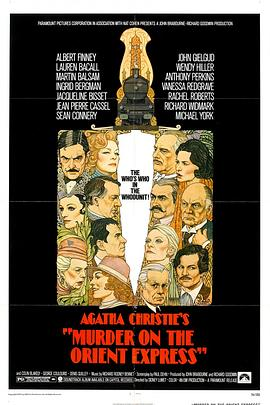

东方快车谋杀案 / Murder on the Orient Express
又名：火车谋杀案 / Agatha Christie's Murder on the Orient Express
作品信息
| 导演 | 西德尼·吕美特 |
| 编剧 | 保罗·戴恩 / 阿加莎·克里斯蒂 |
| 主演 | 阿尔伯特·芬尼 / 劳伦·白考尔 / 马丁·鲍尔萨姆 / 英格丽·褒曼 / 杰奎琳·比塞特 / 让-皮埃尔·卡塞尔 / 肖恩·康纳利 / 约翰·吉尔古德 / 温蒂·希勒 / 安东尼·博金斯 / 瓦妮莎·雷德格雷夫 / 理查德·威德马克 / 麦克尔·约克 |
| 类型 | 剧情 / 悬疑 / 犯罪 |
| 制片国家/地区 | 英国 |
| 语言 | 英语 / 土耳其语 / 法语 / 德语 / 意大利语 / 瑞典语 |
| 上映日期 | 1974-11-24 |
| 片长 | 128分钟 |
| IMDb | tt0071877 |
说过什么
2021-04-02 10:43:19
广播 · 想看
最后一次看到是 2026-08-01T11:09:05+10:00 · 豆瓣原页